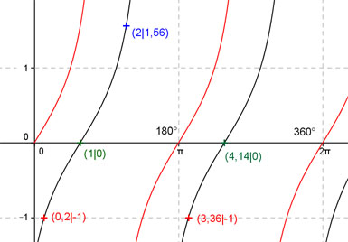

Aufgabe 202
Ergänzen Sie die Wertetabelle für x zwischen 0 und 2π:
y = tan (x - 1)
x 2 0,2 oder 3,36
y 1,56 -1
Periode = π ;
Phasenverschiebung (siehe unten) = -1 oder -57,3° bedeutet,
tan x ist um 1 oder 57,3° nach rechts verschoben.

Berechnung der Nullstellen:
tan (x - 1) = 0 -->
Substitution (x - 1) = u --> tan u = 0 -->
u = k * π mit k = 0, 1, 2, ... -->
Rücksubstitution liefert
x - 1 = k * π | +1 --> x = 1 + k * π
x1 = 1 oder 57,3°.
x2 = 1 + π = 4,14 oder 237;2° gerundet.
Funktionswert an einer Stelle x ermitteln:
2 * 180°
x = 2 oder ---------- = 114,6°
π
f(2) = tan (2 - 1) = tan (114,6° - 57,3°) = 1,56 gerundet.
Berechnung der x-Werte für y = f(x) = -0,5:
f((x)) = -1 eingesetzt, existiert für tan x
zwischen 0 und π bzw. 0° und 180° und zwischen
π und 2π bzw. zwischen 180° und 360°.
tan x = -1 --> x = arc tan(-1) = -0,785 gerundet. -->
x1 = -0,785
x2 = (π - 0,785) = 2,36 gerundet.
(siehe Einheitskreis).
 Unter Berücksichtigung der Phasenverschiebung:
0,2 * 180°
x1 = (-0,785 + 1) = 0,2 oder ------------ = 11,5°
π
x2 = (2,36 + 1) = 3,36 oder 192,5° gerundet.
Unter Berücksichtigung der Phasenverschiebung:
0,2 * 180°
x1 = (-0,785 + 1) = 0,2 oder ------------ = 11,5°
π
x2 = (2,36 + 1) = 3,36 oder 192,5° gerundet.